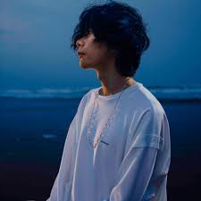

Yonezu Kenshi

Kenshi Yonezu (米津 玄師, Yonezu Kenshi)
is a Japanese musician, singer-songwriter, record producer and illustrator who began releasing Vocaloid music under the stage name Hachi (ハチ) in 2009.
In 2012 he debuted under his real name, releasing music with his own voice.